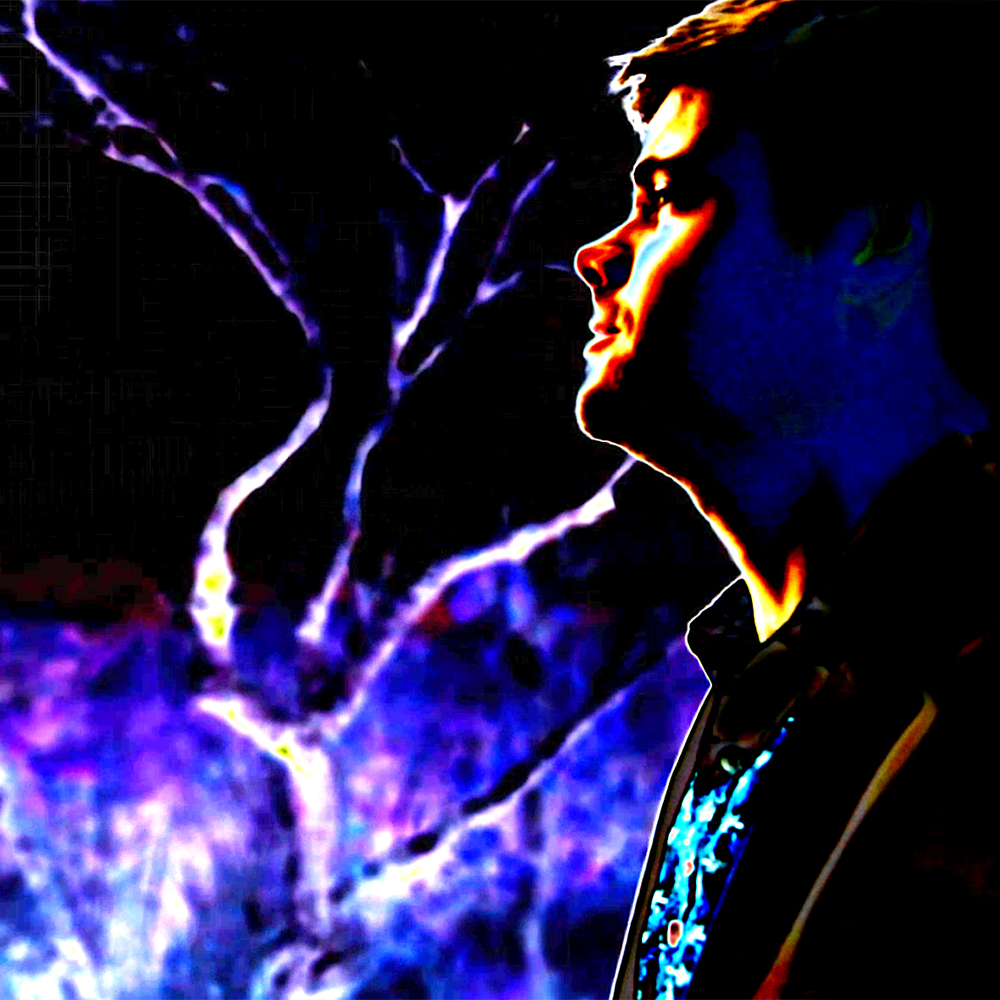

DUNCAN HARRIST MUSIC
Featured Track
Photos
Featured Video
Bio
The Duncan Harrist sound can be broadly classified as Rock/Pop with forays in Psychedelic, Funk and Americana Roots. His latest release, “Sad Girl,” combines honest, wry lyricism with a groove reminiscent of early Santana and Steely Dan that will make listeners dance out of their seats. The band consists of:
- Duncan Harrist – Vocals, Guitar
- Sam Irvine – Bass
- Josh Koons – Keyboard
- Danny Kopac - Drums
Contact
booking: info@duncanharrist.com
(c) Duncan Harrist Music 2018